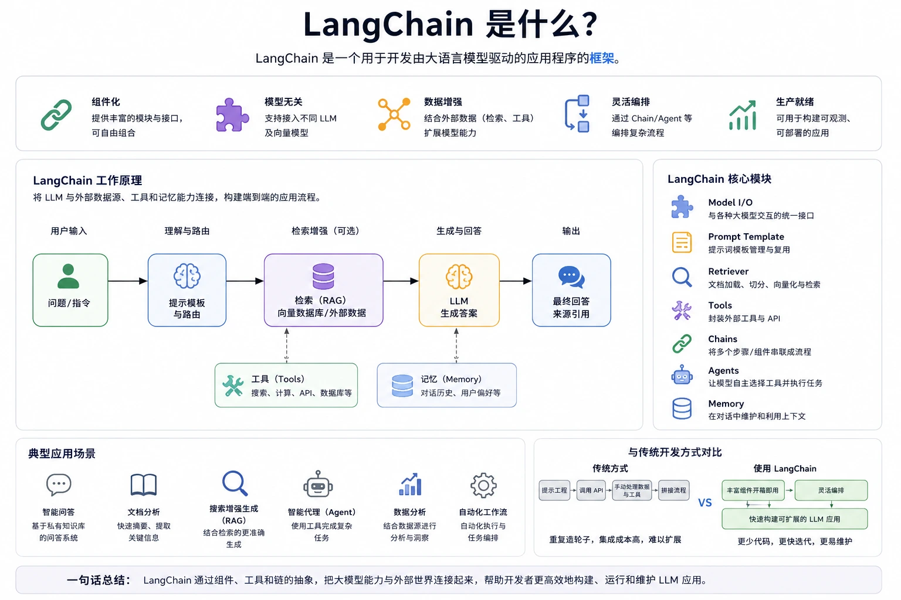

LangChain でエージェントを作成
LangChain は LLM アプリケーションを構築するためのフレームワークであり、モデル呼び出しを、合成可能で、制御可能で、拡張可能なアプリケーションシステムへと昇華させることができます。
LangChain が解決するのはモデルの呼び出し方ではなく、次の点です：
- 多ステップ推論の構成方法
- 外部データの接続方法
- モデルがツールを安全に呼び出す方法
- コンテキストの長期的な管理方法
オープンソースのアドレス：https://github.com/langchain-ai/langchain。
LangChain チュートリアル：https://www.runoob.com/langchain/langchain-tutorial.html

想像してみてください。あなたはインテリジェントなロボットアシスタントを構築しているとします。このアシスタントは、あなたの質問を理解し、さまざまな資料から情報を探し出し、論理的な推論を行い、最後に自然言語で答える必要があります。GPT のような言語モデルを単体で使うのは、ロボットに賢い頭脳だけを取り付けるようなものです。しかし、手や目がありません。外部データの取得方法や具体的なタスクの実行方法を知らないのです。
LangChainLangChain はまさにそのようなフレームワークであり、コネクターとコーディネーターの役割を果たします。
LangChain強力な言語モデル（GPT-4、DeepSeek など）と外部データソース、計算ツール、メモリシステムを巧みに接続し、高機能で実用的な AI アプリケーションを構築します。
簡単に言うと、LangChain の核となる価値は次のとおりです：言語モデルを役に立つものにする、大規模言語モデル（LLM）のいくつかの重要な制限を解決します：
- 知識のリアルタイム性：LLM の学習データにはカットオフ日があり、最新の情報を取得できません。
- 領域特化性：汎用 LLM には、特定の業界や企業のプライベートな知識が不足しています。
- アクション実行能力：LLM 自体は、計算、データベースの照会、API 呼び出しなどのアクションを実行できません。
- 対話の一貫性：複数ターンの対話では、LLM はそれまでのチャット履歴を記憶する必要があります。
LangChain は、標準化された一連のチェーン（Chains）とコンポーネント（Components）によってこれらの機能を整理し、開発者が積み木を積むように複雑な AI アプリケーションをすばやく構築できるようにします。
LangChain モジュール概要：
- LLMs / ChatModels：モデルインターフェース
- Prompt Templates：プロンプトの構造化
- Chains：フローオーケストレーション
- Memory：コンテキスト管理
- Retrievers / VectorStores：知識検索
- Agents & Tools：自動意思決定と実行
環境準備
中国国内のミラーを使用してインストール：
pip install langchain langchain-openai langchain-community python-dotenv -i https://mirrors.aliyun.com/pypi/simple/
OpenAI を使用する場合は、環境変数を設定できます：
export OPENAI_API_KEY=你的key
次に、以下のコードでテストします：
実例
llm = ChatOpenAI(model="gpt-4o-mini", temperature=0)
resp = llm.invoke("LangChain とは何かを一言で説明してください")
print(resp.content)
中国国内では DeepSeek 大規模言語モデルを使ってテストできます。まだお持ちでない場合は、先にhttps://platform.deepseek.com/api_keysAPI キーを作成してください。
DeepSeek の API ドキュメント参照：https://api-docs.deepseek.com/zh-cn/。
複数のサードパーティモデルを一元管理する必要がある場合は、モデルゲートウェイとして LiteLLM をインストールすることもできます：
pip install -U litellm
ただし、この記事のサンプルでは直接ChatOpenAIと組み合わせてopenai_api_baseパラメータで DeepSeek に接続するため、LiteLLM を追加インストールする必要はありません。
実例
from langchain_openai import ChatOpenAI
# API Key は環境変数に置くことを推奨します。またはここに直接代入します（本番環境ではハードコードしないでください）
# os.environ["DEEPSEEK_API_KEY"] = "sk-あなたのDeepSeekキー"
# モデルを初期化
llm = ChatOpenAI(
model="deepseek-v4-pro", # DeepSeek V4 モデル名
openai_api_key="sk-あなたのKey", # あなたの DeepSeek API Key を入力してください
openai_api_base="https://api.deepseek.com", # DeepSeek の API アドレス
temperature=0.7,
max_tokens=1024
)
# テストしてみる
response = llm.invoke("こんにちは、DeepSeek！簡潔に自己紹介してください。")
print(response.content)
上記のコードを実行すると、次の内容が出力されます：
你好！很高兴认识你！ 我是DeepSeek，由深度求索公司创造的AI助手。我的特点包括： 。。。
LCEL チェーンを構築する (LangChain Expression Language)
モデルを単に呼び出すだけでは不十分です。標準的な処理フローを構築する必要があります：
Prompt -> LLM -> OutputParser
完全なコードは以下のとおりです：
実例
from langchain_core.output_parsers import StrOutputParser
from langchain_openai import ChatOpenAI
# 1. モデルを定義する (Model)
llm = ChatOpenAI(
model="deepseek-v4-pro",
openai_api_key="あなたの_DEEPSEEK_API_KEY",
openai_api_base="https://api.deepseek.com"
)
# 2. プロンプトテンプレートを定義する (Prompt)
# system: AI の役割を設定
# user: ユーザーの具体的な入力
prompt = ChatPromptTemplate.from_messages([
("system", "あなたは経験豊富な技術専門家であり、複雑なテクノロジー概念を、誰にでもわかる『平易な言葉』で説明するのが得意です。あなたの説明には、生き生きとした比喩を含めてください。"),
("user", "{concept}")
])
# 3. 出力パーサーを定義する (Output Parser)
# モデルの Message オブジェクトを直接プレーン文字列に変換する
parser = StrOutputParser()
# 4. チェーンを構築する (Chain) - パイプ記号 | を使用して接続
# フロー：入力辞書 -> Prompt を埋め込む -> LLM に送信 -> 出力を解析
chain = prompt | llm | parser
# 5. チェーンを呼び出す
concept_to_explain = "量子もつれ"
print(f"概念を説明中：{concept_to_explain}...\n")
result = chain.invoke({"concept": concept_to_explain})
print("--- DeepSeek の回答 ---")
print(result)
ストリーミング出力 (Streaming)
実際のアプリケーション（チャットボットなど）では、ChatGPT のように一文字ずつテキストを出力する必要があります。生成が完了してから一度に表示するのではなく。
LangChain ではこれを非常に簡単にサポートしています。.stream()の代わりに.invoke()：
実例
from langchain_core.output_parsers import StrOutputParser
from langchain_openai import ChatOpenAI
# 1. モデルを定義する (Model)
llm = ChatOpenAI(
model="deepseek-v4-pro",
openai_api_key="あなたの_DEEPSEEK_API_KEY",
openai_api_base="https://api.deepseek.com"
)
# 2. プロンプトテンプレートを定義する (Prompt)
# system: AI の役割を設定
# user: ユーザーの具体的な入力
prompt = ChatPromptTemplate.from_messages([
("system", あなたは経験豊富な技術専門家であり、複雑なテクノロジー概念を誰にでもわかる「平易な言葉」で説明するのが得意です。説明には生き生きとした比喩を含めるべきです。),
("user", "{concept}")
])
# 3. 出力パーサー（Output Parser）を定義
# モデルの Message オブジェクトを直接プレーンな文字列に変換する
parser = StrOutputParser()
# 4. チェーン（Chain）を構築 - パイプ演算子 | で接続する
# フロー：入力辞書 -> Prompt を埋め込む -> LLM に送信 -> 出力を解析
chain = prompt | llm | parser
# 5. チェーンを呼び出す
concept_to_explain = 量子もつれ
print(f概念「{concept_to_explain}」を説明中...（ストリーム出力）\n")
# ここの chunk は毎回生成される断片
for chunk in chain.stream({"concept": 再帰型ニューラルネットワーク}):
print(chunk, end="", flush=True)
コード構造
Prompt
ChatPromptTemplate明確に区別するsystem / user- Prompt は構造化入力関数、文字列ではない
LLM
ChatOpenAI単なる統一インターフェース- LangChain はモデルの能力を強化するのではなく、強化するのは制御可能性
OutputParser
- モデル出力は常に
Message StrOutputParser是明示的な型変換を必要とする- Parser がなければ、エンジニアリングは制御不能になる
中核コンポーネントの詳細
1. モデル (Models)
LangChain は統一された抽象インターフェースを提供しており、現在は主に使用が推奨されていますChat Models、なぜなら現在のモデル（DeepSeek、GPT-4 など）はほとんどが対話向けに最適化されているからです。
- Chat Models: 入力と出力は構造化されたメッセージです。
SystemMessage: AI の役割を設定します。HumanMessage: ユーザーが送信したメッセージ。AIMessage: AI が返したメッセージ。
2. プロンプト (Prompts)
新しいバージョンでは、使用が推奨されていますChatPromptTemplate会話形式のプロンプトを構築するために使用され、現在の主流 LLM の呼び出し習慣により適しています。
from langchain_core.prompts import ChatPromptTemplate
# 使用 from_messages 构建结构化模板
prompt_template = ChatPromptTemplate.from_messages([
("system", "你是一位专业的{role}。"),
("user", "{content}")
])
# 动态填充变量
prompt = prompt_template.invoke({"role": "美食评论家", "content": "评价一下这碗炸酱面"})
# 输出：包含 SystemMessage 和 HumanMessage 的列表
3. チェーン (Chains) & LCEL
重要な更新： LLMChainは非推奨となりました。現在はLCEL（パイプ演算子|)構文）。この方式はより柔軟で、非同期とストリーム出力をサポートします。
# 现代写法：Prompt | Model | OutputParser
from langchain_core.output_parsers import StrOutputParser
# 这里的 llm 是 ChatOpenAI(model="deepseek-v4-pro") 的实例
chain = prompt_template | llm | StrOutputParser()
# 调用链
result = chain.invoke({"role": "导游", "content": "介绍一下故宫"})
print(result) # 直接输出字符串
4. インデックスと検索 (Indexes & Retrieval)
これはRAG（検索拡張生成）の中核です。新しいバージョンでは、ドキュメントを「レトリーバー」に変換するプロセスが強調されています。
- フロー:
DocumentLoaders（ロード）->TextSplitter（分割）->Embeddings（ベクトル化）->VectorStore（ストレージ）。 - Retriever: もはや単なるデータベース検索ではなく、チェーンに統合できるコンポーネントです。
# 将向量库转为检索器
retriever = vectorstore.as_retriever()
# 在新版链中引用
# chain = {"context": retriever, "question": RunnablePassthrough()} | prompt | llm
完全な RAG 実践例
次に、完全な RAG アプリケーションを実装します。まず、追加の依存関係をインストールする必要があります：
pip install langchain-community faiss-cpu sentence-transformers -i https://mirrors.aliyun.com/pypi/simple/
実例
from dotenv import load_dotenv
from langchain_openai import ChatOpenAI
from langchain_community.embeddings import HuggingFaceEmbeddings
from langchain_core.prompts import ChatPromptTemplate
from langchain_core.output_parsers import StrOutputParser
from langchain_core.runnables import RunnablePassthrough
from langchain_community.vectorstores import FAISS
from langchain.text_splitter import RecursiveCharacterTextSplitter
# 環境変数を読み込む
load_dotenv()
# モデルと Embedding を初期化する
llm = ChatOpenAI(
model=os.getenv('DEEPSEEK_MODEL', 'deepseek-v4-pro'),
openai_api_key=os.getenv('DEEPSEEK_API_KEY'),
openai_api_base=os.getenv('DEEPSEEK_BASE_URL', 'https://api.deepseek.com'),
)
# 無料のローカル Embedding モデルを使用する（初回実行時に自動でダウンロードされます）
embeddings = HuggingFaceEmbeddings(
model_name="sentence-transformers/all-MiniLM-L6-v2"
)
# --- 1. 知識ドキュメントを準備する ---
# 実際のプロジェクトでは、これらのドキュメントはファイル、Webページ、データベースなどから読み込めます
documents = [
"LangChain は、大規模言語モデルアプリケーションを構築するためのオープンソースフレームワークであり、2022 年に Harrison Chase によって作成されました。",
"LangChain のコアコンポーネントには、モデルインターフェース、プロンプトテンプレート、チェーン、メモリ、検索、エージェントが含まれます。",
"LCEL（LangChain Expression Language）は、LangChain の次世代チェーン構築構文であり、パイプ演算子 | で各コンポーネントを接続します。",
"RAG（検索拡張生成）は、生成前に関連ドキュメントを検索することで、LLM がトレーニングデータ外の質問にも回答できるようにします。",
"LangGraph は、LangChain チームが発表した新しいフレームワークであり、複雑な多段階 AI エージェントワークフローの構築に特化しています。",
"LangSmith は、LangChain の可観測性プラットフォームであり、LLM アプリケーションのデバッグ、テスト、監視に使用されます。",
]
# --- 2. テキスト分割 ---
text_splitter = RecursiveCharacterTextSplitter(
chunk_size=100,
chunk_overlap=20
)
# ここではドキュメントはすでに短いですが、実際のシナリオでは長いドキュメントは複数の断片に分割されます
texts = text_splitter.create_documents(documents)
# --- 3. ベクトル化して FAISS に保存する ---
vectorstore = FAISS.from_documents(texts, embeddings)
# --- 4. レトリーバーを作成する ---
retriever = vectorstore.as_retriever(search_kwargs={"k": 2})
# --- 5. RAG チェーンを構築する ---
rag_prompt = ChatPromptTemplate.from_messages([
("system", "あなたは知識アシスタントです。以下に取得したコンテキストに基づいて質問に答えてください。コンテキストに答えがない場合は、知らないと言ってください。 コンテキスト：{context}"\n\n# 補助関数：検索したドキュメントを文字列に連結する),
("human", "{question}")
])
# --- 6. RAG をテストする ---
def format_docs(docs):
return "\n".join(doc.page_content for doc in docs)
rag_chain = (
{"context": retriever | format_docs, "question": RunnablePassthrough()}
| rag_prompt
| llm
| StrOutputParser()
)
"LangChain のコアコンポーネントは何ですか？"
question = "問題：{question}"
print(f"回答：{rag_chain.invoke(question)}")
print(fRAG 技術の要点：)
- FAISS本番環境では
- Pinecone、Milvus、Chroma、Weaviate などの専門のベクトルデータベースの使用を推奨します。永続化と分散をサポートしています。Embedding モデル
- ：この例では HuggingFace のモデルを使用します。初回実行時に自動でダウンロードされます（約 80MB）。
all-MiniLM-L6-v2OpenAI API Key をお持ちの場合は、こちらも使用できます - より良い中国語の効果を得ることができます。
OpenAIEmbeddings国内の中国語シーンでは、使用を推奨します - などの中文 Embedding モデル
BAAI/bge-small-zh-v1.5実際のドキュメントの特性に応じて調整する必要があります。大きすぎると精度が失われ、小さすぎるとコンテキストが失われる可能性があります。 - chunk_size 和 chunk_overlap5. メモリ（Memory）
5. メモリ (Memory)
従来の複雑な LCEL チェーンには統合が難しいです。最新では以下を使用することを推奨しますConversationBufferMemoryと組み合わせてChatMessageHistoryコアロジックRunnableWithMessageHistory。
- : メモリはもはやチェーンの属性ではなく、独立したメッセージストアであり、これによって異なるユーザーを区別します。
session_id永続化 - : Redis、PostgreSQL、またはメモリへの保存をサポートします。6. エージェント（Agents）
6. エージェント (Agents)
自律的に意思決定しますどのツールを呼び出すか、どの順序で実行するかを決定し、真の「エージェント」です。Agent のコアループ：タスクの受信 -> 思考（ツール選択）-> ツールの実行 -> 結果の観察 -> 思考を続ける、または最終回答を出す。
背景
デコレータは、任意の Python 関数を LLM が呼び出し可能なツールに変換できます。LangChain は関数名と docstring を自動的にモデルに渡し、モデルがこのツールをいつどのように使うかを認識できるようにします。@tool以下は、天気情報の取得、数学計算、知識検索の3つのツールを含む完全な Agent の実践例です：
実例
実例
from dotenv import load_dotenv
from langchain_openai import ChatOpenAI
from langchain_core.prompts import ChatPromptTemplate, MessagesPlaceholder
from langchain_core.tools import tool
from langchain.agents import AgentExecutor, create_tool_calling_agent
# DeepSeek モデルを初期化
load_dotenv()
# --- ツールを定義 ---
llm = ChatOpenAI(
model=os.getenv('DEEPSEEK_MODEL', 'deepseek-v4-pro'),
openai_api_key=os.getenv('DEEPSEEK_API_KEY'),
openai_api_base=os.getenv('DEEPSEEK_BASE_URL', 'https://api.deepseek.com'),
)
# @tool デコレータを使用すると、LangChain は関数名と docstring を自動的にモデルに伝えます
"""指定された都市の現在の天気情報を取得します。ユーザーが天気を尋ねたときはこのツールを使用します。"""
@tool
def get_current_weather(city: str) -> str:
# 実際のアプリケーションでは、ここで実際の天気 API を呼び出します
"北京"
weather_data = {
"晴れ、気温 28°C、湿度 45%": "晴天，气温 28°C，湿度 45%",
上海: 曇り、気温 25°C、湿度 70%,
深セン: 雷雨、気温 30°C、湿度 85%,
}
return weather_data.get(city, f申し訳ありませんが、{city} の天気データはまだありません)
@tool
def calculate(expression: str) -> str:
"""数学式を計算します。ユーザーが数学計算を行う必要がある場合にこのツールを使用します。"""
基本的な四則演算をサポートします。例: '2 + 3 * 4'。"""
import ast
import operator
# 安全な演算子マッピング
ops = {
ast.Add: operator.add,
ast.Sub: operator.sub,
ast.Mult: operator.mul,
ast.Div: operator.truediv,
ast.Pow: operator.pow,
ast.USub: operator.neg,
}
def safe_eval(node):
if isinstance(node, ast.Expression):
return safe_eval(node.body)
elif isinstance(node, ast.Constant):
return node.value
elif isinstance(node, ast.BinOp):
left = safe_eval(node.left)
right = safe_eval(node.right)
return ops[type(node.op)](left, right)
elif isinstance(node, ast.UnaryOp):
operand = safe_eval(node.operand)
return ops[type(node.op)](operand)
else:
raise ValueError(f"サポートされていない式の型: {type(node)}")
try:
tree = ast.parse(expression, mode='eval')
result = safe_eval(tree)
return f"計算結果: {expression} = {result}"
except Exception as e:
return f"計算エラー: {e}"
@tool
def search_knowledge(query: str) -> str:
"""ナレッジベースを検索して関連情報を取得します。ユーザーが事実に関する質問をしたときにこのツールを使用します。"""
# 実際のアプリケーションでは、ここにベクトルデータベースまたは検索エンジンを接続します。
knowledge = {
"LangChain": "LangChain は LLM アプリケーションを構築するためのオープンソースフレームワークであり、チェーン呼び出し、メモリ管理、ツール統合をサポートしています。",
"Python": "Python は高水準プログラミング言語であり、簡潔で読みやすいことで知られ、AI、データサイエンスなどの分野で広く使用されています。",
}
for key, value in knowledge.items():
if key.lower() in query.lower():
return value
return f"'{query}' に関連する情報が見つかりませんでした"
# --- ツールリストの組み立て ---
tools = [get_current_weather, calculate, search_knowledge]
# --- Agent のプロンプトを作成 ---
prompt = ChatPromptTemplate.from_messages([
("system", "あなたは強力なAIアシスタントで、ツールを使用してユーザーを支援できます。ユーザーの質問に基づいて、ツールを使用する必要があるかどうかを判断し、最適なツールを選択して情報を取得します。"),
("human", "{input}"),
MessagesPlaceholder(variable_name="agent_scratchpad"),
])
# --- Agent を作成 ---
agent = create_tool_calling_agent(llm, tools, prompt)
# --- AgentExecutor（エージェント実行器）を作成 ---
# verbose=True にすると、Agent の完全な思考プロセスを見ることができます
agent_executor = AgentExecutor(agent=agent, tools=tools, verbose=True)
# --- Agent をテスト ---
# テスト1: 天気クエリ
print("=" * 50)
response = agent_executor.invoke({"input": "北京の今日の天気はどうですか？"})
print(f"\n最終回答: {response['output']}")
# テスト2: 数学計算
print("\n" + "=" * 50)
response = agent_executor.invoke({"input": "(15 * 37 + 228) / 3 はいくらか計算してください"})
print(f"\n最終回答: {response['output']}")
# テスト3: 統合問題（Agentがどのツールを使うか自分で判断する必要があります）
print("\n" + "=" * 50)
response = agent_executor.invoke({"input": "LangChain とは何ですか？また、2の10乗を計算してください"})
print(f"\n最終回答: {response['output']}")
上記のコードを実行すると、次のように表示されます（verbose=True のときの思考チェーン出力）：
==================================================
> Entering new AgentExecutor chain...
Invoking: `get_current_weather` with `{'city': '北京'}`
晴天，气温 28°C，湿度 45%
根据查询结果，北京今天的天气是晴天，气温 28°C，湿度 45%。
> Finished chain.
最终回答: 北京今天天气晴朗，气温 28°C，湿度 45%，适合外出活动。
==================================================
> Entering new AgentExecutor chain...
Invoking: `calculate` with `{'expression': '(15 * 37 + 228) / 3'}`
计算结果：(15 * 37 + 228) / 3 = 261.0
> Finished chain.
最终回答: (15 * 37 + 228) / 3 的计算结果是 261.0
==================================================
> Entering new AgentExecutor chain...
Invoking: `search_knowledge` with `{'query': 'LangChain'}`
Invoking: `calculate` with `{'expression': '2 ** 10'}`
LangChain 是一个用于构建 LLM 应用的开源框架...
计算结果：2 ** 10 = 1024
> Finished chain.
最终回答: LangChain 是一个用于构建 LLM 应用的开源框架，支持链式调用、记忆管理和工具集成。另外，2 的 10 次方等于 1024。
verbose=TrueAgent の完全な意思決定チェーンを確認でき、デバッグと動作の理解に役立ちます- Agent は呼び出す必要があるツールを自動的に判断し、呼び出し順序を人間が指定する必要はありません
- 問題がツールを必要としない場合（簡単な雑談など）、Agent は自身の知識を直接使用して回答します
- 複雑な問題の場合、Agent はツールを複数回呼び出したり、複数のツールを並行して呼び出したりする可能性があります
クイックスタート：はじめての LangChain アプリを構築する
簡単な例を通して、LangChain の便利さを体感しましょう。
実際の開発では、API の関連情報をプロジェクトルートディレクトリの.envファイルに保存すると、便利に使用できます。
# .env 文件内容 DEEPSEEK_API_KEY=sk-xxx DEEPSEEK_BASE_URL=https://api.deepseek.com DEEPSEEK_MODEL=deepseek-v4-pro
例 1：基本的な Q&A チェーン
実例
from dotenv import load_dotenv
# 正しいインポートパス
from langchain_core.prompts import PromptTemplate
from langchain_core.output_parsers import StrOutputParser
from langchain_openai import ChatOpenAI
# 環境変数を読み込む
load_dotenv()
llm = ChatOpenAI(
model=os.getenv('DEEPSEEK_MODEL'),
openai_api_key=os.getenv('DEEPSEEK_API_KEY'),
openai_api_base=os.getenv('DEEPSEEK_BASE_URL'),
)
# プロンプトテンプレートを作成
template = """
あなたは親切なアシスタントです。
以下の質問に答えてください：
質問：{question}
回答：
"""
prompt = PromptTemplate.from_template(template)
# LCEL 構文を使用してチェーンを作成（推奨方式）
# 構造: Prompt -> LLM -> 文字列に解析
chain = prompt | llm | StrOutputParser()
# チェーンを実行
question = "LangChain とは何ですか？主な用途は何ですか？"
response = chain.invoke({"question": question})
print("質問：", question)
print("-" * 20)
print("回答：", response)
例 2：メモリ付き対話チェーン
会話履歴を記憶できるシンプルなチャットボットを作成しましょう。
実例
from dotenv import load_dotenv
from langchain_openai import ChatOpenAI
from langchain_core.prompts import ChatPromptTemplate, MessagesPlaceholder
from langchain_community.chat_message_histories import ChatMessageHistory
from langchain_core.chat_history import BaseChatMessageHistory
from langchain_core.runnables.history import RunnableWithMessageHistory
# 1. 設定を読み込む
load_dotenv()
# 2. DeepSeek モデルを初期化
llm = ChatOpenAI(
model=os.getenv('DEEPSEEK_MODEL', 'deepseek-v4-pro'),
openai_api_key=os.getenv('DEEPSEEK_API_KEY'),
openai_api_base=os.getenv('DEEPSEEK_BASE_URL', 'https://api.deepseek.com'),
)
# 3. プロンプトテンプレートを定義
# MessagesPlaceholder は実行時に会話履歴で埋められます
prompt = ChatPromptTemplate.from_messages([
("system", "あなたは親切な AI アシスタントです。"),
MessagesPlaceholder(variable_name="history"),
("human", "{question}"),
])
# 4. チェーンを構築
chain = prompt | llm
# 5. メモリ管理：異なるユーザーの履歴を保存するための辞書を作成
store = {}
def get_session_history(session_id: str) -> BaseChatMessageHistory:
if session_id not in store:
store[session_id] = ChatMessageHistory()
return store[session_id]
# 6. RunnableWithMessageHistory を使用してチェーンをラップ
# これにより、LangChain が履歴の読み取りと更新を自動的に処理します
with_message_history = RunnableWithMessageHistory(
chain,
get_session_history,
input_messages_key="question",
history_messages_key="history",
)
# 7. 対話ループに入る
print("--- DeepSeek チャットモードに入りました ('exit' と入力すると終了) ---")
session_config = {"configurable": {"session_id": "user_001"}} # 異なるセッションを識別するための ID
while True:
user_input = input("あなた: ")
if user_input.lower() in ["exit", "quit", "終了"]:
break
# メモリ付きチェーンを呼び出す
response = with_message_history.invoke(
{"question": user_input},
config=session_config
)
print(f"AI: {response.content}\n")
上記のコードを実行すると、次のように表示されます：
--- 已进入 DeepSeek 聊天模式 (输入 'exit' 退出) --- 你: 你好 AI: 你好！很高兴见到你！ 有什么我可以帮助你的吗？无论是回答问题、聊天，还是协助解决问题，我都很乐意为你提供帮助！ 你: 我叫小明 AI: 你好，小明！很高兴认识你！ 如果你有任何问题、想法，或者需要帮助的地方，随时告诉我哦～ 你: 我叫什么记得吗？ AI: 当然记得！你刚刚告诉我你叫**小明**～ 我会认真记住我们的对话内容，在之后的交流中尽量保持上下文连贯。不过如果对话过长或间隔太久，我可能需要你提醒一下哦～ 有什么想聊的或需要帮助的吗？
まとめ
本記事では、LangChain フレームワークの核となる概念と実践的な応用について紹介しました。LangChain は標準化されたコンポーネントとチェーン呼び出しにより、開発者が強力な AI アプリケーションを迅速に構築できるようにします。
以下の表は、本記事で取り上げた核心的な知識ポイントをまとめたものです：
| 概念 | 説明 | 主要コード |
|---|---|---|
| LCEL チェーン | パイプ記号 | で Prompt、Model、Parser を接続します | chain = prompt | llm | parser |
| プロンプトテンプレート | 構造化された Prompt で、system/user ロールを区別します | ChatPromptTemplate.from_messages() |
| ストリーミング出力 | 一文字ずつ出力し、ユーザー体験を向上させます | chain.stream() |
| 対話メモリ | session_id を使用して複数ターンの対話履歴を管理します | RunnableWithMessageHistory |
| RAG 検索拡張 | 外部知識の接続により、LLM の知識の限界を突破します | retriever | format_docs |
| Agent エージェント | 自律的にツール呼び出しを決定する、最も核心的な高度機能 | create_tool_calling_agent() |
クリックしてメモを共有
<p style="font-size:14px;">ノートはこの記事の内容を拡張したものである必要があります！</p><br> <p style="font-size:12px;"><a href="../tougao.html" target="_blank">記事の投稿は、ここをクリック</a></p> <p style="font-size:14px;"><a href="../w3cnote/runoob-user-test-intro.html" target="_blank">登録招待コードの取得方法</a></p> <h3 class="text-muted"><i class="fa fa-info-circle" aria-hidden="true"></i> ノートを共有する前に<a href=";.html" class="runoob-pop">ログイン</a>が必要です！</h3> <p><a href="../w3cnote/runoob-user-test-intro.html" target="_blank">登録招待コードの取得方法</a></p>